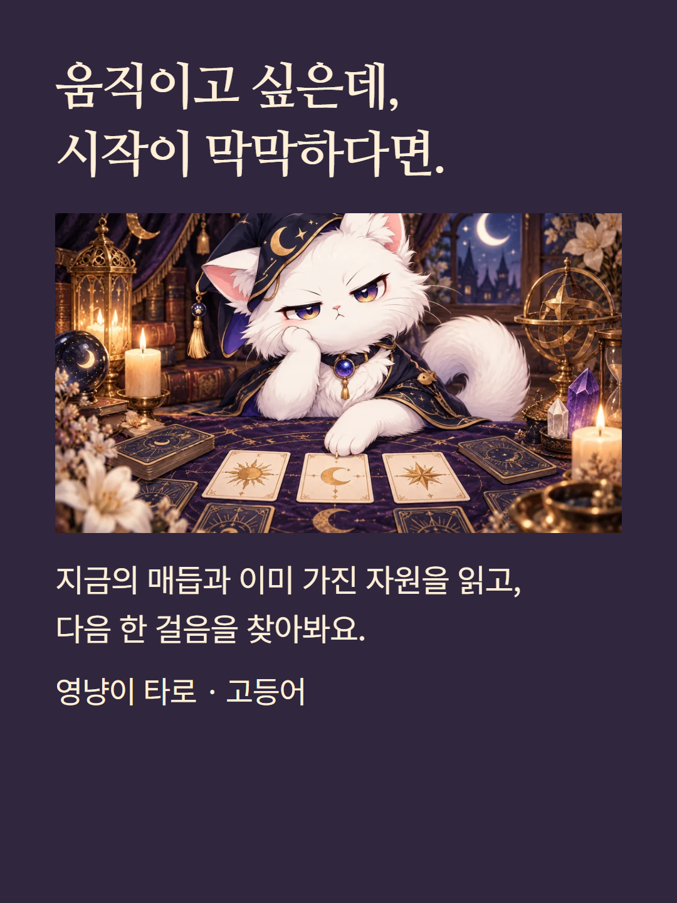
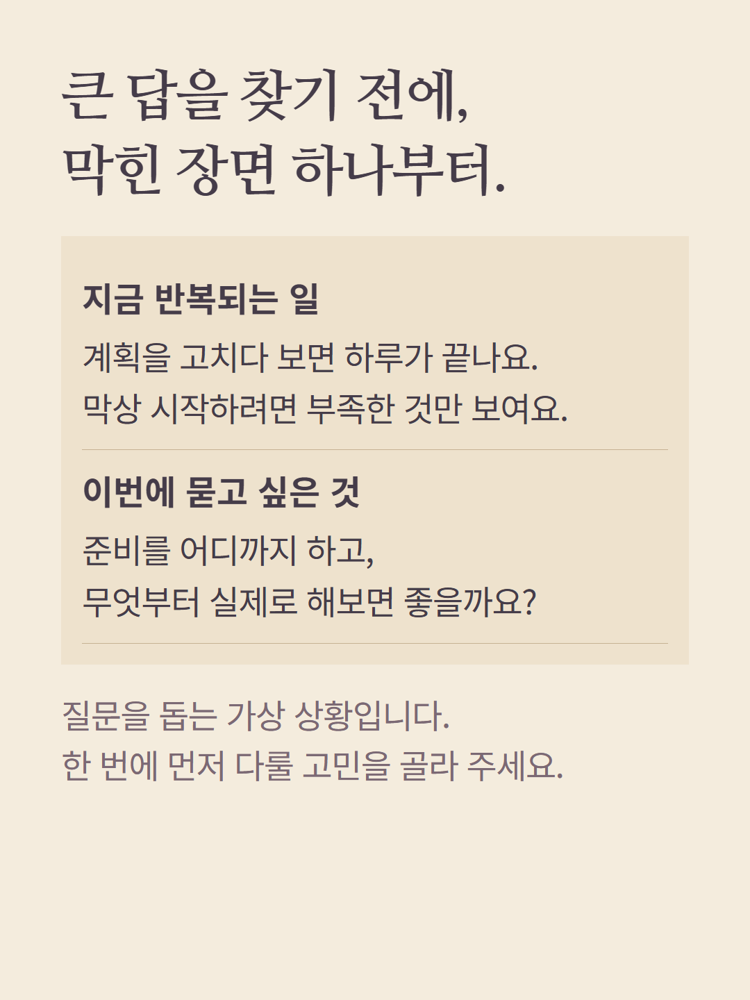
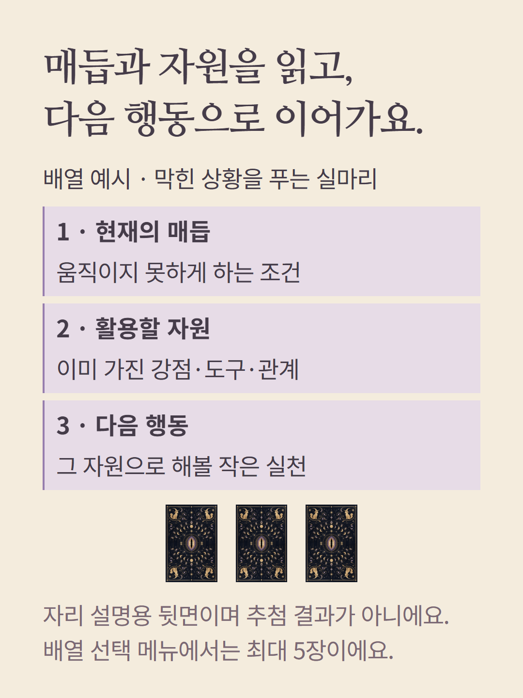
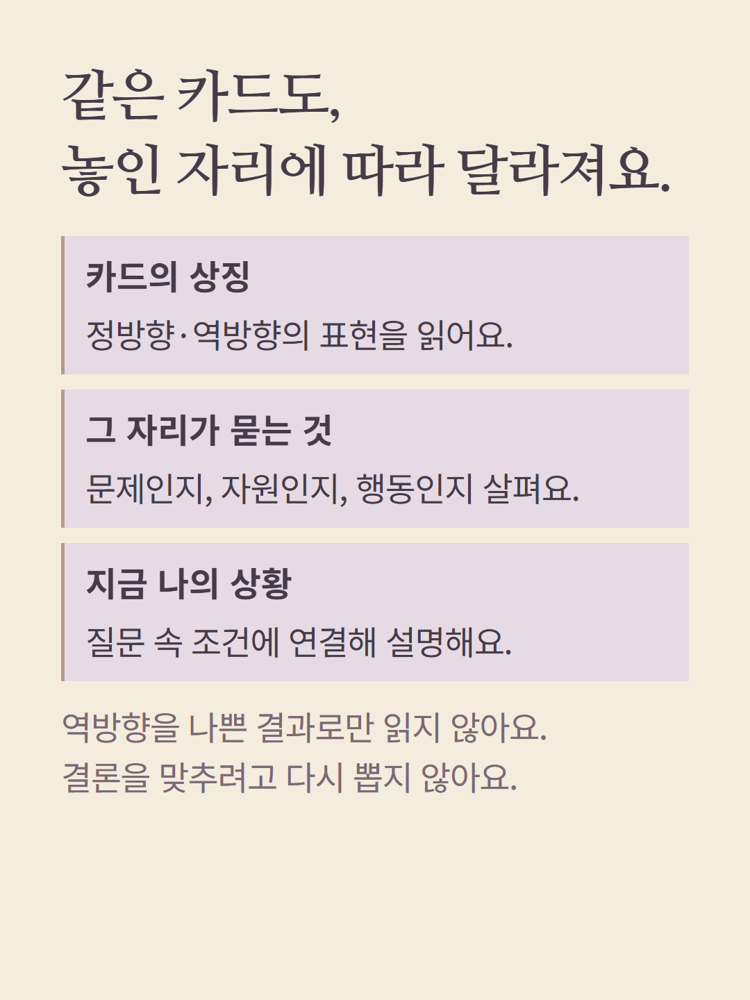
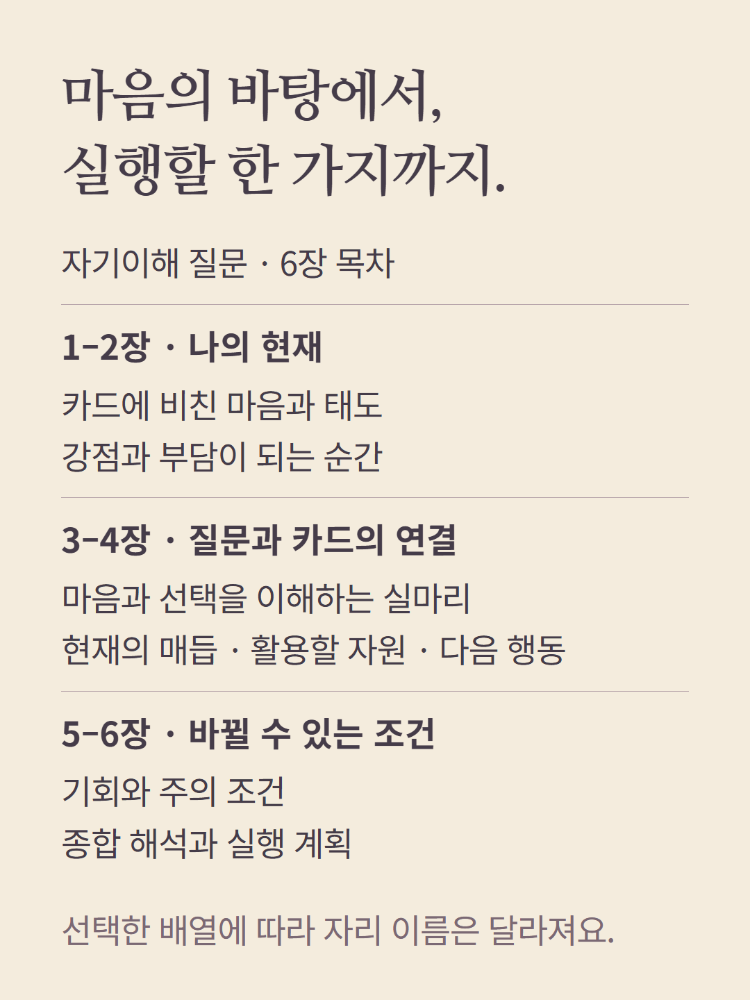
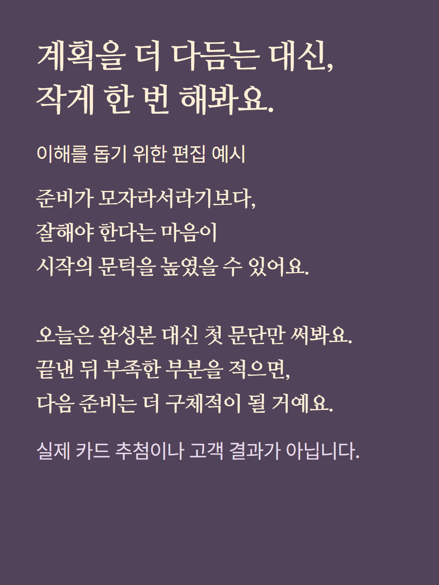
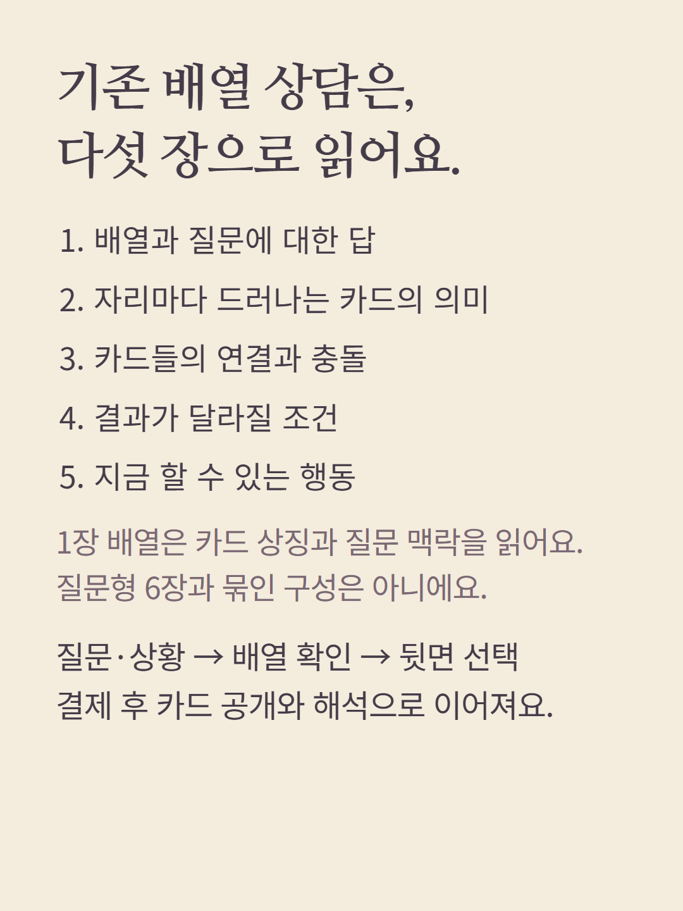
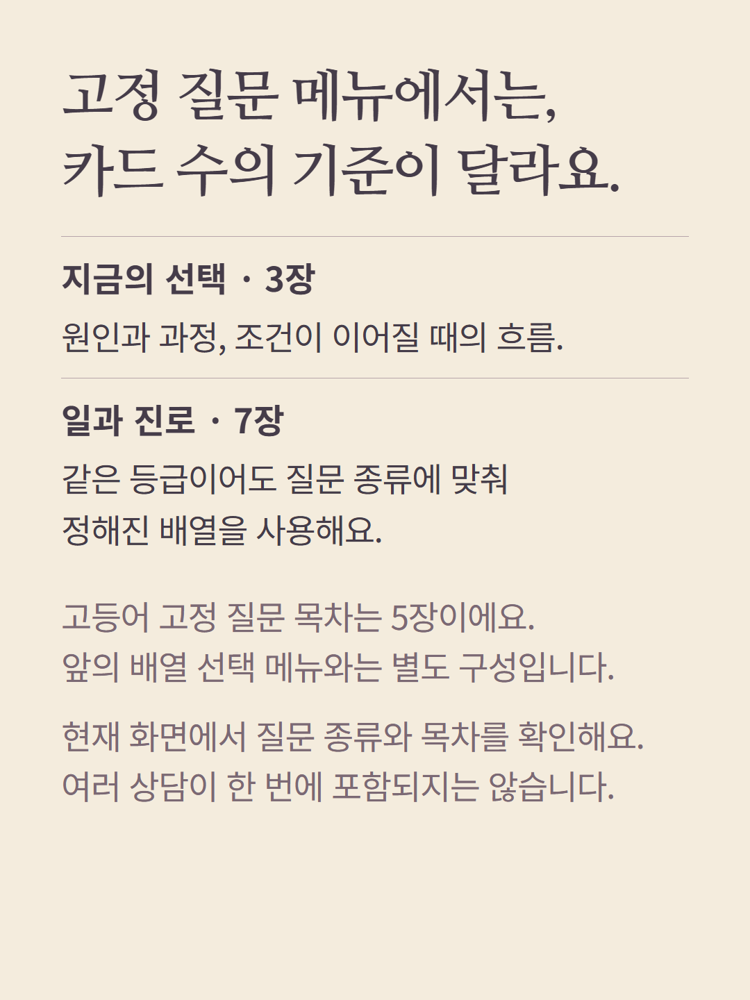
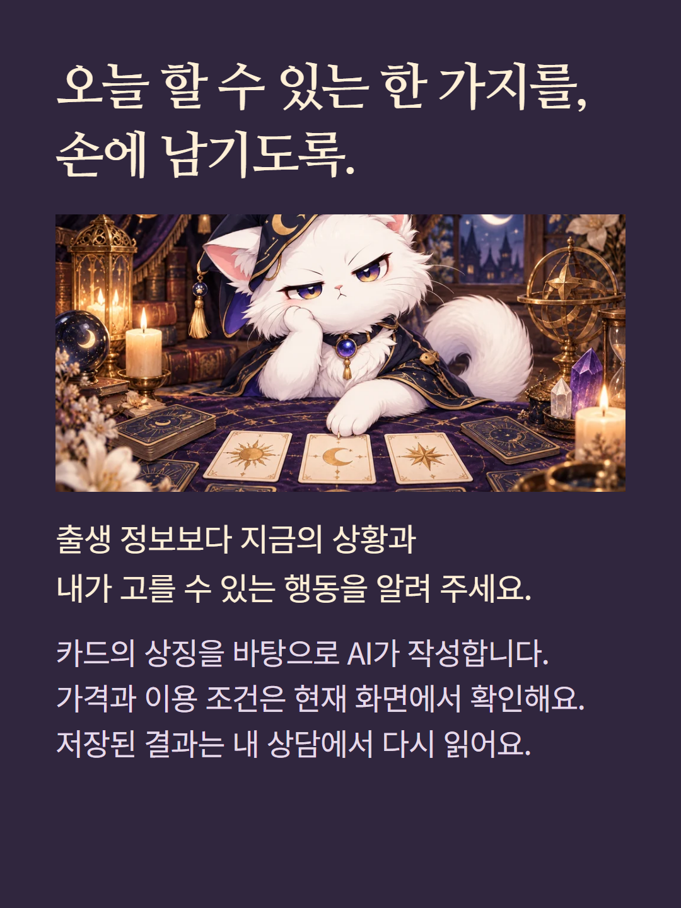

타로 고등어의 ‘질문으로 고르는 배열’은 최대 5장 범위에서 질문에 맞는 배열 하나를 선택합니다. 이 안내는 3장 배열 ‘막힌 상황을 푸는 실마리’를 예로 설명하며 항상 5장을 뽑는 상품이 아닙니다. 자기이해 질문 상담은 6장 목차, 기존 배열 상담은 5장 목차로 구성이 다릅니다. 카드의 자리·정역방향·연결을 질문에 비춰 읽고 실제 타인의 마음이나 미래 사건을 확인하지 않습니다. 출생 정보 대신 질문과 상황을 사용하며 결제 전에 뒷면 카드를 선택하고 결제 후 공개합니다. 예시는 실제 추첨·고객 결과가 아닌 가상 편집입니다. AI 작성 상담이며 가격·이용 조건은 기존 화면을 따릅니다. 기존 고정 질문 메뉴는 등급과 무관하게 종류별 카드 수를 사용하며 별도로 선택합니다.